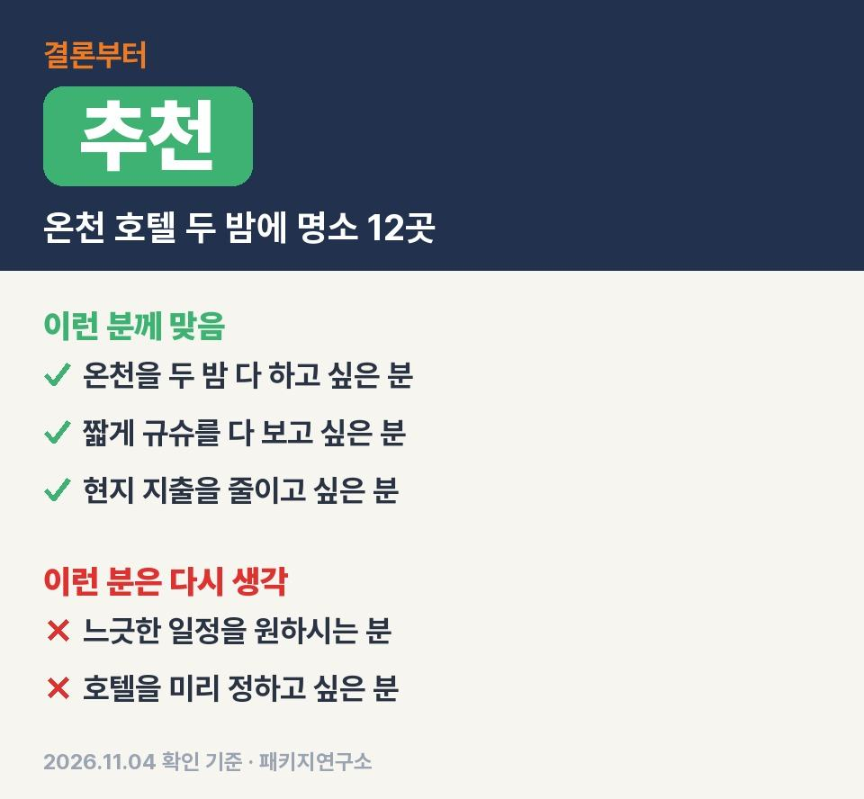
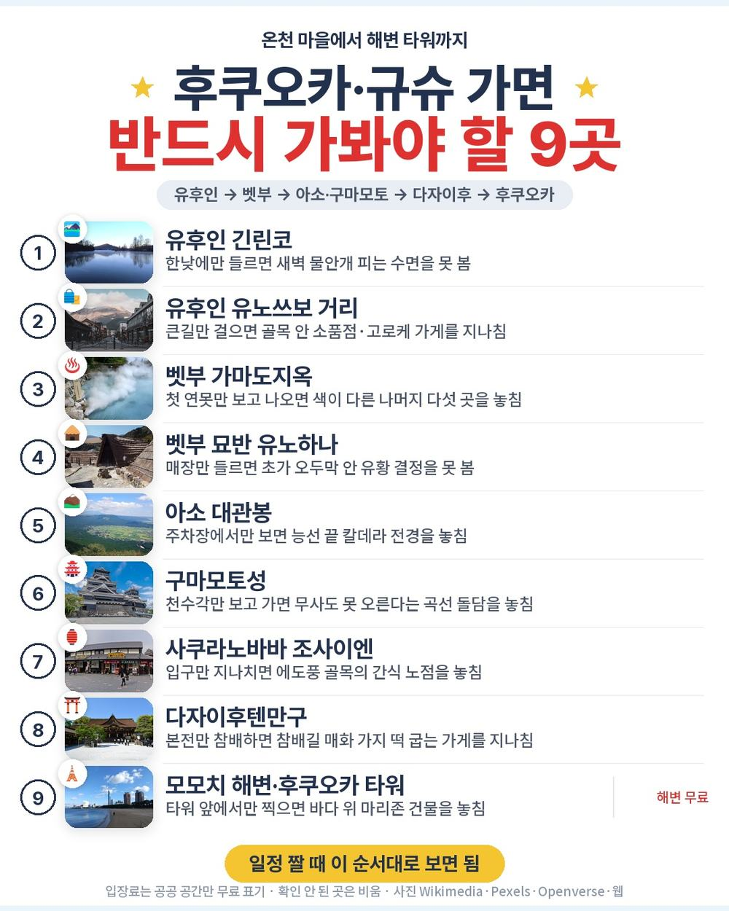
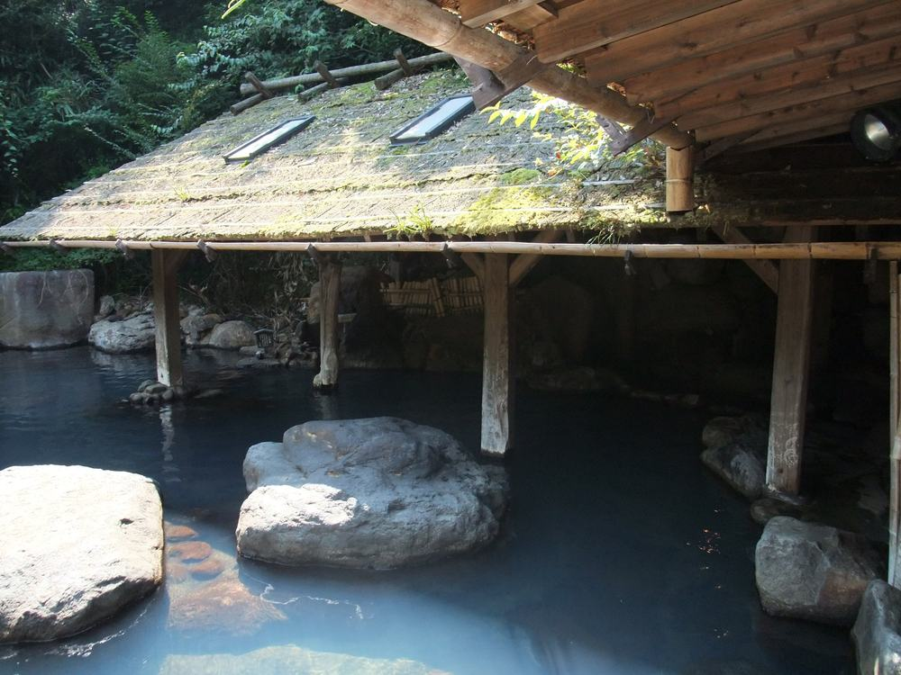
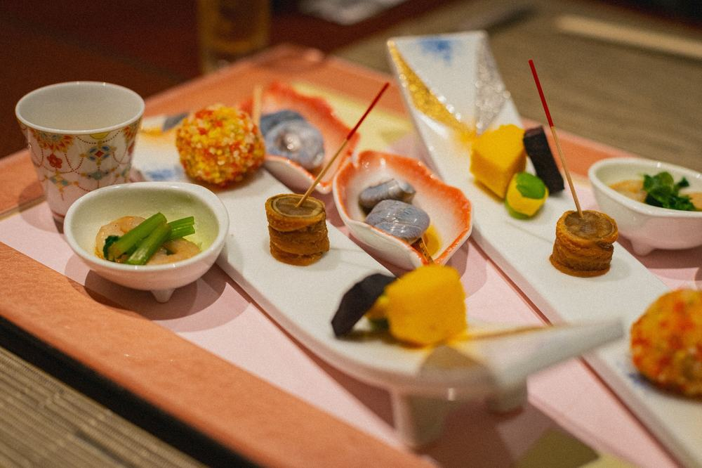
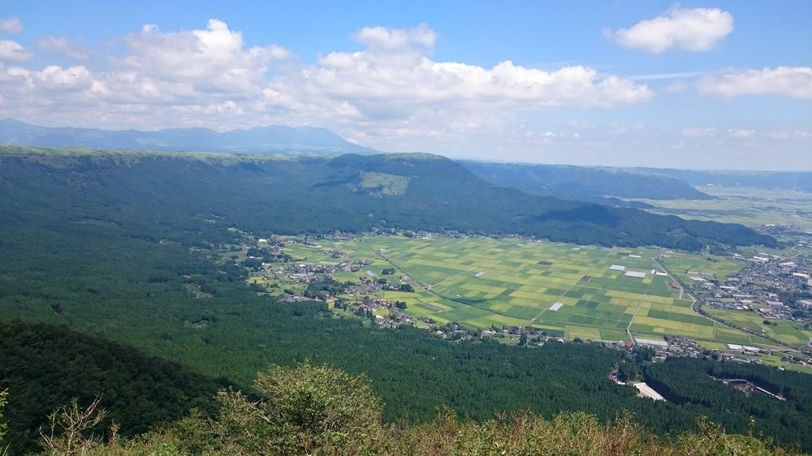
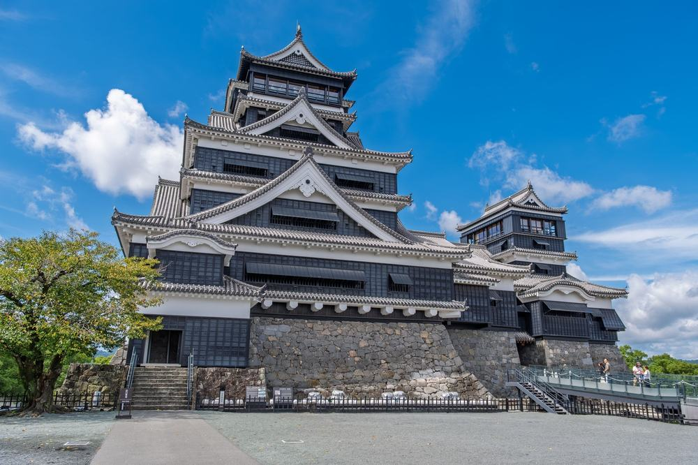
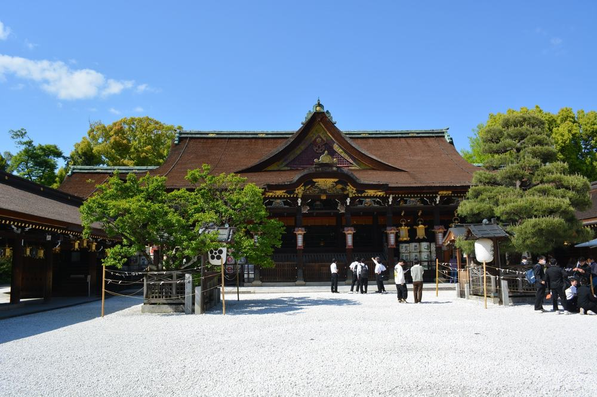

사흘짜리 후쿠오카 패키지인데 두 밤이 전부 온천 호텔이고 첫날 저녁이 카이세키로 잡혀 있음.
다녀온 후기가 아니라 모두투어 일정표와 포함·불포함 원문을 줄마다 따져 본 글임.
결론 — 추천. 온천 호텔 두 밤, 식사 7회, 유후인부터 다자이후까지 명소 12곳이 값 안에 있음. 다만 사흘 내내 빽빽한 일정이 버거우신 분은 맞지 않음.

오늘 기준 출발일별 요금 보기
https://naver.me/FRoHuEEo

| 항목 | 내용 |
|---|---|
| 가격 | 1인 849,900원 (성인 · 11월 출발 기준) · 2인 1,699,800원 |
| 여행사 | 모두투어 |
| 항공 | 트리니티항공 직항 (TW231·TW236) · 김해 09:00 → 후쿠오카 10:00 / 후쿠오카 20:00 → 김해 21:00 |
| 숙소 | 온천 호텔급 2박 (오이타 쪽 1박 · 아소·구마모토 쪽 1박 · 후보 중 배정 · 트윈 또는 화실) |
| 일정 | 2박 3일 · 버스 · 한국어 가이드 · 식사 7회 · 쇼핑 1회 · 선택관광 없음 |
▶ 내 출발일 오늘 기준 요금 확인 (제휴 링크 · 예약 시 수수료를 받으며 가격은 같습니다)
▶ 11월 4일 기준 후쿠오카 패키지 최저 59만 9,900원부터 — 출발일별 값 한 화면에: 비교 페이지
같은 일정을 제주항공으로 가는 상품은 1인 64만 9,900원임(11월 4일 기준 · 출발일마다 다름). 비행 시간과 날짜를 같이 놓고 고르면 됨.
| 번호 | 내용 | 한 줄 답 |
|---|---|---|
| 1 | 이 값에 들어 있는 것 | 명소 12곳 |
| 2 | 현장에서 더 낼 돈 | 2인 약 5만 1천원 |
| 3 | 일정과 체력 | 버스 약 9시간 |
| 4 | 자유여행으로 짜면 | 1인 약 75만 7천원 |
| 5 | 맞는 분 · 안 맞는 분 | 3 대 3 |

84만 9,900원 안에 들어간 걸 줄 세워 보면 이럼.
김해–후쿠오카 직항 왕복, 온천 호텔 두 밤, 식사 7회, 명소 입장, 버스, 한국어 가이드, 최대 1억원 여행자보험.
저녁 두 번이 이 상품 색깔을 정함. 첫날은 카이세키, 둘째 날은 호텔 뷔페임. 점심은 함바그 정식과 일본 가정식 일정식이 들어가 있음.
도는 곳은 유후인 긴린코와 유노쓰보 거리, 벳부 가마도지옥과 유노하나, 아소 대관봉과 밀크 팩토리, 구마모토성과 사쿠라노바바, 다자이후텐만구, 후쿠오카 타워와 모모치 해변, 라라포트. 가마도지옥 족욕탕에서 온천 달걀과 라무네를 먹는 게 별미라는 말이 여러 블로그에 반복해서 나옴.
사흘에 규슈 네 개 현을 훑고 밤마다 온천 호텔로 들어가는 구성임.

| 항목 | 금액 | 필수/선택 | 비고 |
|---|---|---|---|
| 가이드·기사 경비 | 6,000엔 (약 5만 1천원) | 필수 | 1인 3,000엔 현지 지불 · 100엔 약 851원 |
| 선택관광 | 0원 | 없음 | 일정에 선택관광 없음 |
| 3일차 저녁 | 각자 | 해당 시 | 20:00 비행기라 저녁이 일정에 없음 |
| 면세점 | 0원 | 자유 | 60분 들르지만 살지 말지는 자유 |
| 합계 (2인 필수분) | 약 5만 1천원 | 싱글룸 요금은 원문에 없음 |
꼭 나가는 건 가이드 경비 하나라서 두 분 총액은 약 175만 800원.
엔화로 3,000엔씩 챙겨 가면 끝남.
2인 기준 상품가에 5만원 남짓 더하면 예산이 닫힘.

| 일차 | 가는 곳 | 버스 | 걷기 | 점심 · 저녁 |
|---|---|---|---|---|
| DAY 1 | 후쿠오카 10:00 도착 → 긴린코·유노쓰보 거리 → 가마도지옥·유노하나 → 온천 호텔 | 약 3시간 | 보통 | 현지식 · 카이세키 |
| DAY 2 | 아소 대관봉 → 밀크 팩토리 → 구마모토성·사쿠라노바바 → 온천 호텔 | 약 3시간 30분 | 보통 | 함바그 정식 · 호텔 뷔페 |
| DAY 3 | 다자이후텐만구 → 후쿠오카 타워·모모치 해변 → 라라포트 → 면세점 → 공항 20:00 | 약 2시간 30분 | 보통 | 일정식 · 없음 |
버스는 사흘 합쳐 약 9시간. 하루 서너 곳씩 내려서 걷는 구조라 쉬는 시간이 거의 없음.
구마모토성은 오르막과 계단이 많은 편이라 밑창 편한 운동화가 맞음. 원문 안내에도 온천은 천천히 들어가고 지병이 있으면 가이드에게 미리 알리라고 적혀 있음.
몸이 고된 날마다 밤이 온천이라, 빡빡한 낮을 탕에서 푸는 동선임.

| 항목 | 금액 | 근거 |
|---|---|---|
| 김해–후쿠오카 왕복 항공 | 296,500원 | PUS↔FUK 직항 왕복 1인 (패키지와 같은 출발일 · 2026-11-04 마이리얼트립 조회) |
| 온천 호텔 2박 (석식 포함) | 300,000원 | 2인 1실 1인분 · 1박 2식 기준 (추정) |
| 식사 (점심 3회) | 45,000원 | 현지 식당 (추정) |
| 렌터카·기름 3일 | 100,000원 | 2인 나눠 1인분 (추정) |
| 공항 이동 | 0원 | 렌터카 공항 픽업 기준 |
| 여행자보험 · 유심 | 15,000원 | 3일 기준 (추정) |
| 가이드 | — | 자유여행은 없음 |
| 합계 | 약 756,500원 |
직접 짜면 1인 약 75만 7천원, 패키지는 84만 9,900원. 패키지가 9만원쯤 더 듦.
그 9만원으로 사는 게 운전임. 유후인에서 벳부, 아소 산길, 구마모토 시내, 다자이후까지 사흘 동안 네 개 현을 직접 몰아야 함. 대관봉 같은 산 위 전망대는 대중교통으로 가기 어려움.
운전을 안 하고 가이드 설명을 들으며 도는 값이 1인 9만원 안팎이라고 보면 됨.

| 맞는 분 | 안 맞는 분 |
|---|---|
| 온천을 두 밤 다 하고 싶은 분 | 느긋한 일정을 원하시는 분 |
| 짧게 규슈를 다 보고 싶은 분 | 호텔을 미리 정하고 싶은 분 |
| 현지 지출을 줄이고 싶은 분 | 쇼핑센터 방문 자체가 싫으신 분 |
이 상품으로 다녀온 분들 후기를 보면 끼니마다 나온 식사가 만족스러웠다는 말이 제일 많음. 온천이 아늑해서 편했다는 얘기도 여러 번 나옴. 반대로 다다미방 냄새나 시설이 아쉬웠다는 후기도 있으니, 방 타입(트윈 또는 화실)은 예약 때 물어보는 게 좋음.
안 맞는 쪽도 길은 있음. 낮이 빡빡한 만큼 두 밤 다 온천 호텔에서 쉬고 쇼핑은 마지막 날 면세점 한 번이 전부.
일정 밀도를 견딜 수 있으면 값에 든 내용은 빠지는 데가 없음.
Q. 후쿠오카 패키지 쇼핑은 몇 번 가나요?
A. 1번. 마지막 날 후쿠오카 시내 면세점에 60분 들름. 선택관광은 일정에 없음.
Q. 부모님 후쿠오카 패키지로 이 상품 걷는 양은 어떤가요?
A. 사흘 모두 보통 수준. 구마모토성 오르막과 계단이 제일 힘든 구간이라 편한 운동화를 권함.
Q. 후쿠오카 패키지 가이드 경비는 따로 내나요?
A. 냄. 가이드·기사 경비 1인 3,000엔을 현지에서 엔화로 냄. 성인과 아동 같은 금액.
두 밤 다 온천 호텔이고 저녁 두 번이 카이세키와 뷔페로 채워진 사흘짜리 규슈 상품.
빽빽한 낮을 견딜 수 있는 분이면 값 대비 담긴 게 많음.
출발일마다 값이 달라서 가시려는 날짜 요금부터 확인하시면 됨.
오늘 기준 출발일별 요금 보기
https://naver.me/FRoHuEEo
이 글에는 네이버 제휴 링크가 포함되어 있으며, 링크를 통해 예약하시면 일정 수수료를 받습니다. 가격은 동일합니다. 가격과 구성은 2026년 11월 4일 확인 기준이며 출발일에 따라 달라질 수 있습니다.
▶ 이 상품, 영상으로 보기 (유튜브)
▶ 후쿠오카 패키지 오늘 값 나란히 비교
▶ 같은 목적지 다른 여행사 패키지, 쇼핑·선택관광·가이드 경비까지 비교: pkg-lab.com